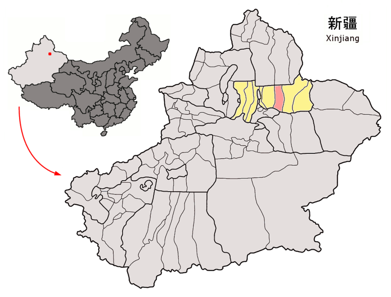

Oil Shaling
- Discovered in 2011
- Area of 1,278 square kilometers
- Proven reserves of more than 100 million tons
- Cumulative production of 1.51 million tons of shale oil
- Annual production exceeded 500,000 tons
- 40 new wells drilled, increasing production by more than 396,000 tonnes (2023)
- 2.9 billion more tonnes of oil in Xinjiang
- Created many jobs in China, especially in engineering
